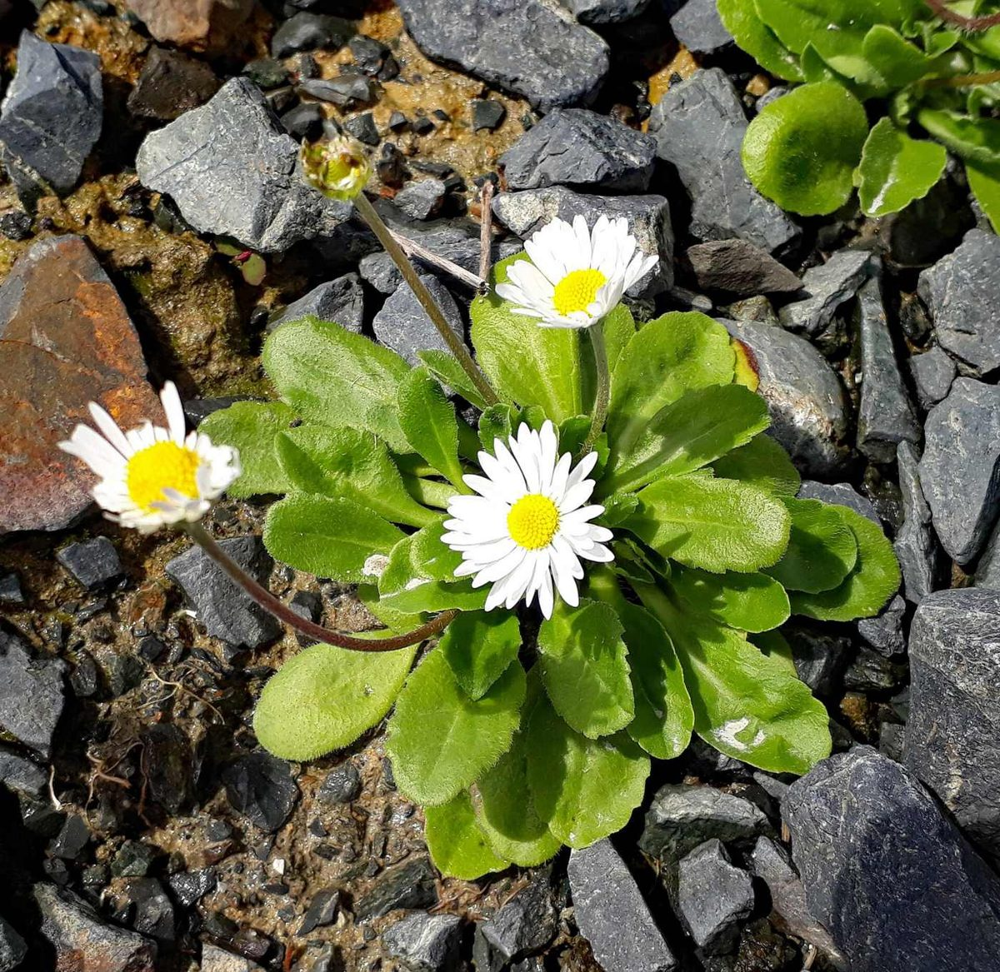
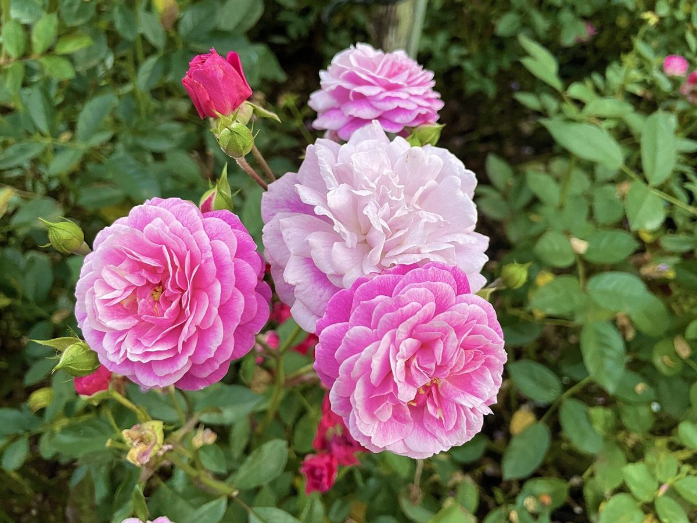

ABOUT
緑と花のそばの、小さなカフェ
cafe Lilyは、新潟市西区ときめき西にあるカフェです。お店のInstagramでは、緑や花に囲まれた空間で、挽きたてのドリップコーヒー、プレートランチ、手作りデザートを提供していると紹介されています。
- 業態: カフェ(Instagramプロフィールより)
- ご予約: お電話で受け付け(番号は準備中表示)
- 店名の由来・オーナーの想い: 確認できていません
このページは、お店の紹介文をもとに制作側が作った試作です。「Lily」の名の意味は分からないため、断定していません。


MENU
コーヒー、ごはん、甘いもの
紹介されている提供内容は次の三つです。品目・価格・営業時間は確認できていないため準備中です。

ドリップコーヒー
挽きたてを一杯ずつ。
品目・価格 準備中
プレートランチ
ひと皿に、おかずを少しずつ。
内容・価格 準備中
手作りデザート
甘いものでひと休み。
品目・価格 準備中




写真はフリー素材のイメージで、お店の実際の様子・商品ではありません。
VOICE
口コミ(イメージ例)
以下は制作側が作った例文で、実在のお客様の声ではありません。
イメージ例
お花や緑が目に入って、ゆっくり落ち着ける雰囲気でした。コーヒーを飲みながら、のんびり過ごせました。
イメージ例
ランチのプレートが見た目にもきれいで、ほっとする味。食後に甘いものも頼みたくなります。
イメージ例
手作りのデザートとコーヒーの組み合わせが好きです。ひとりでも友だちとでも寄りやすそうです。